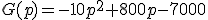
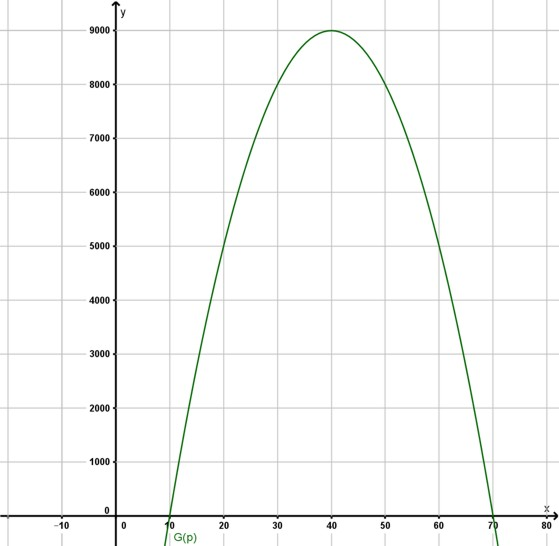

Matemática: Función Cuadrática
Comprobamos lo aprendido
Problema 5
Determinen los intervalos de crecimiento y decrecimiento para las funciones del Problema 4:
Problema 6
Para la realización de un festival musical con el que se busca recaudar fondos para el colegio, se determinó que los costos iniciales eran de $7000. A partir de los datos que se conocen de festivales anteriores, se construyó una función que relaciona el precio de la entrada p con las ganancias G(p), en pesos, con el propósito de realizar estimaciones:


Obra publicada con Licencia Creative Commons Reconocimiento Compartir igual 4.0